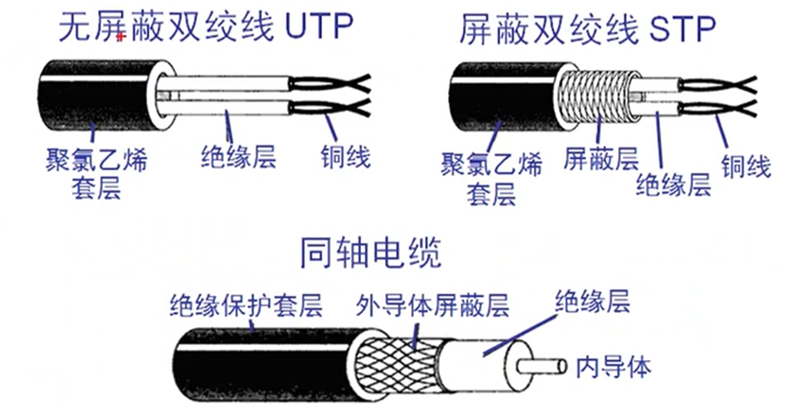
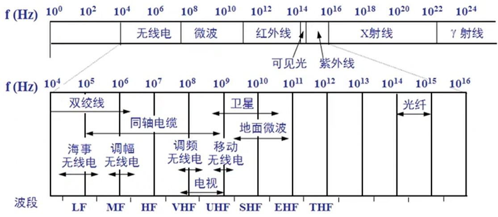
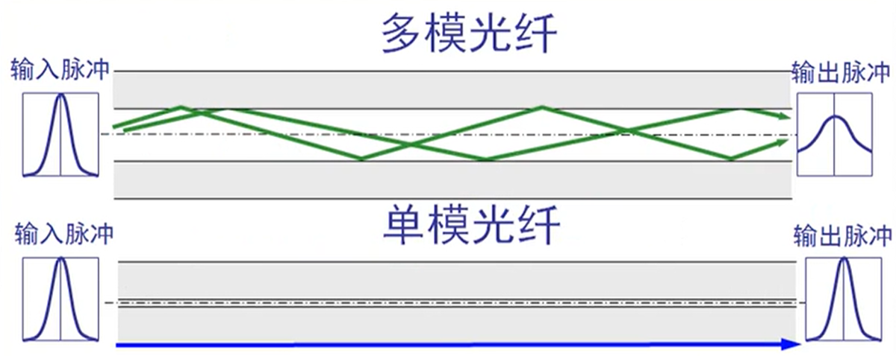
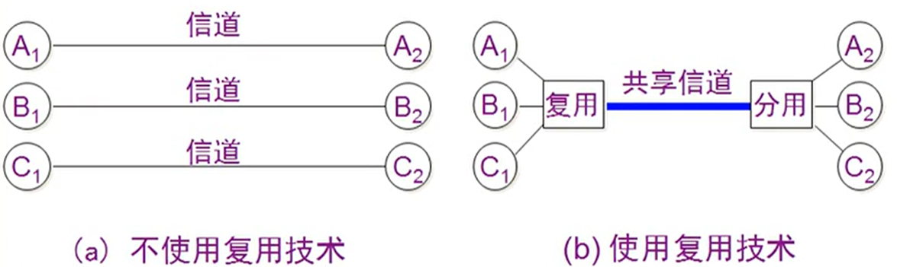
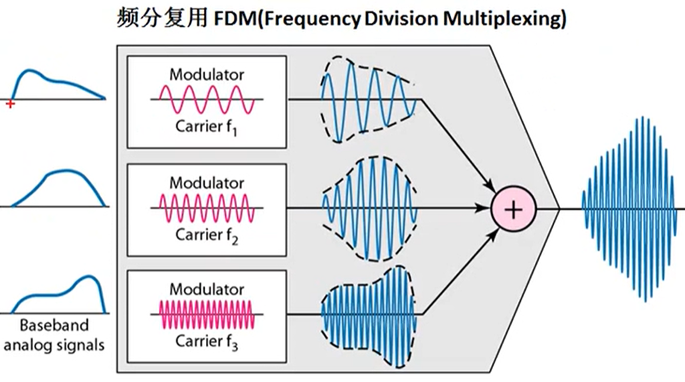
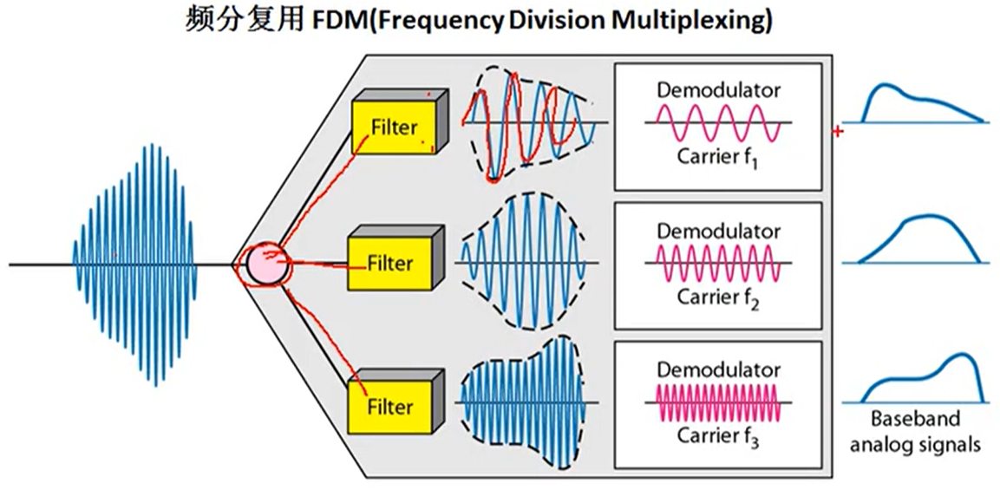
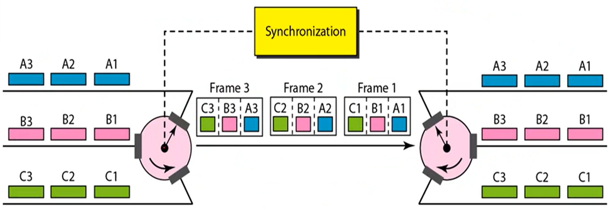
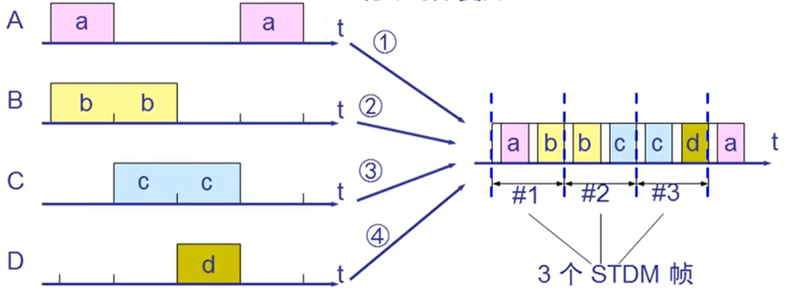
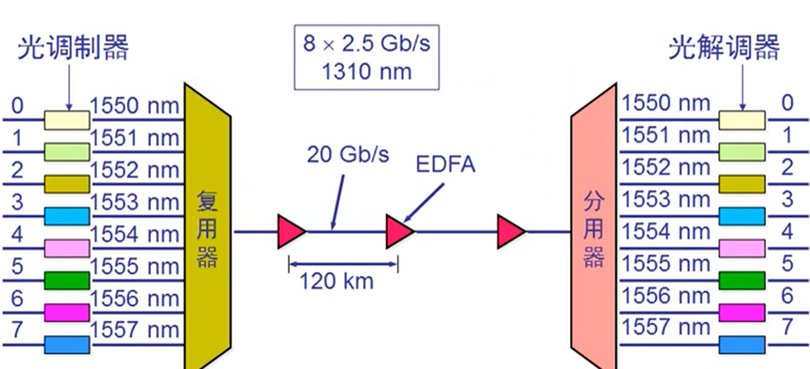

传输媒体 链接到标题
导向传输媒体 链接到标题
-
双绞线
- 屏蔽双绞线 STP
- 无屏蔽双绞线 UTP
-
同轴电缆
- 50Ω 同轴电缆用于数字传输，由于多用于基带传输，也叫基带同轴电缆。
- 75Ω 同轴电缆用于模拟传输，即宽带同轴电缆。
-
光缆
- 光缆是一定数量的光纤按照一定方式组成缆心，外包有护套，有的还包覆外护层，用以实现光信号传输的一种通信线路。

导向传输媒体中，电磁波沿着固体媒体传播。
非导向传输媒体 链接到标题
非导向传输媒体就是指自由空间，其中的电磁波传输被称为无线传输。 无线传输使用的频段很广，例如以下两种：
- 短波通信主要靠电离层的反射，但短波通信的通信质量较差。
- 微波在空间主要是直线传播，例如地面微波接力通信，卫星通信。
电信领域使用的电磁波的频谱 链接到标题

网络设备 链接到标题
网线 链接到标题
-
直通线
- 主机到交换机或集线器
- 路由器到交换机或集线器
- 主机到交换机或集线器
-
交叉电缆
- 交换机到交换机
- 集线器到集线器
- 主机到主机
- 集线器到交换机
- 路由器直连到主机
线序制作方法 链接到标题
- 直通线：双绞线夹线顺序两边一致，1.橙白、2.橙、3.绿白、4.蓝、5.蓝白、6.绿、7.棕白、8.棕，两端都是同样的线序且一一对应，即 568B 标准，也就是正线或标准线、直通线。
- 交叉电缆: 1、2 号线与 3、6 号线交叉传送，也就是 568A 标准。
- 568A: 绿白、绿、橙白、蓝、蓝白、橙、棕白、棕
光纤 链接到标题

- 单模光纤，只能传输一种电磁波模式，光纤细，传播特性好，有线电视网络中使用的都是单模光纤，带宽可达 10GHZ，可以在一根光纤中传输 60 套 PAL—D 电视节目。
- 多模光纤，只可以传输多个电磁波模式，光纤粗。
集线器 链接到标题
工作特点：它在网络中只起到信号放大和重发作用，其目的是扩大网络的传输范围，而不具备信号的定向传送能力。
最大传输距离： 100m
集线器是一个大的冲突域。
信道复用技术 链接到标题
基础模型图 链接到标题

频分复用 链接到标题
频分复用 FDM(Frequency Division Multiplexing),用户分配到一定的频带后，在通信过程中始终占用这个频带。频带复用的所有用户在同样的时间占用不同的带宽资源(这里带宽指频率带宽不是数据发送速率)。


时分复用 链接到标题
时分复用 TDM(Time Division Multiplexing),将时间划分为一段段等长的时分复用帧(TDM)帧。每一个时分复用的用户在每一个 TDM 帧中占用固定序号的时隙。每一个用户所占用的时隙是周期性出现的(周期就是 TDM 帧的长度对应的时间)。
TDM 信号也称为等时信号，时分复用的所有用户是在不同的时间占用相同的频带宽度。

统计时分复用 链接到标题
统计时分复用 STDM(Statistic TDM)，由于时分复用可能造成线路资源浪费，使用时分复用系统传输计算机数据时，由于计算机数据突发性，用户对分配的子信道利用率一般不高，所以用统计时分复用去解决，也就是给每一个用户的信息加标记去区分用户的信息。

波分复用 链接到标题
波分复用 WDM(Wavalength Division Multiplexing)，波分复用也就是光的频分复用。
